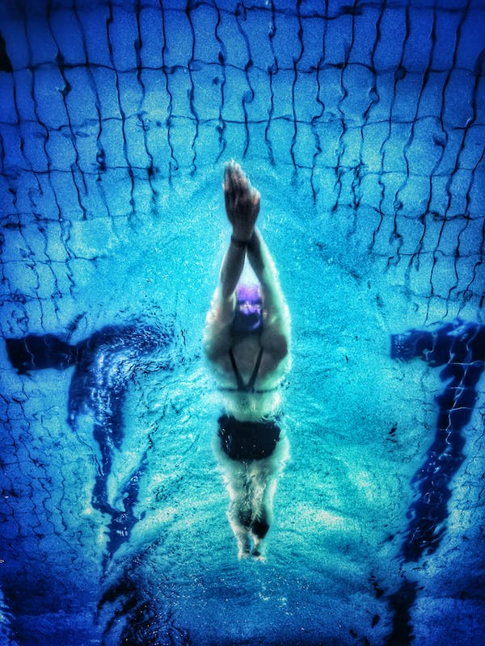

Swimming is more than just a hobby for me; it's a way of life, a source of solace and serenity in a hectic world. From the moment I first dipped my toes into the cool, inviting waters of the pool, I was hooked, drawn to the weightless sensation of floating, the rhythmic motion of strokes, and the quiet solitude of the underwater world. With each lap, I feel my cares melt away, replaced by a sense of peace and tranquility that is hard to find anywhere else.  For me, swimming is not just exercise; it's a form of meditation, a chance to quiet my mind and connect with my body in a way that is both grounding and liberating. As I glide through the water, I focus on the rhythm of my breath, the sensation of my muscles working, and the sound of my heart beating in my chest, letting go of stress and tension with each stroke. In the silence of the pool, I find clarity and perspective, gaining insights and inspiration that elude me on dry land. But swimming is also a social activity, a chance to connect with others and share in the joys of movement and physical exertion. Whether I'm swimming laps with a friend, participating in a water aerobics class, or simply lounging by the poolside, I relish the opportunity to bond with others over our shared love of the water. In a world that often feels fragmented and disconnected, swimming offers a sense of community and belonging that is both comforting and empowering. Of course, swimming isn't always easy. There are days when the water is cold, the pool is crowded, and my muscles ache with fatigue. But even in those moments of struggle, I find solace in the rhythm of my strokes, the feel of the water against my skin, and the knowledge that I am capable of more than I ever thought possible. Swimming has taught me resilience, discipline, and perseverance, instilling in me a sense of confidence and self-assurance that carries over into every aspect of my life. In the end, swimming is more than just a hobby or a form of exercise; it's a way of being, a philosophy of life that embraces movement, mindfulness, and the pursuit of inner peace. It's a reminder that, no matter how turbulent the waters may be, there is always a place of calm and tranquility waiting to be found, if only we have the courage to dive in and explore it.